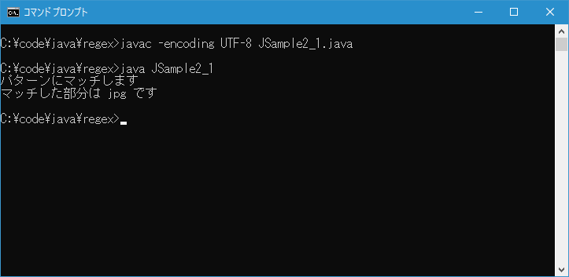

- Home ›
- Java入門 ›
- Java正規表現の使い方
PatternオブジェクトとMatcherオブジェクトを作成する
正規表現を使ってどのような文字列とマッチさせるのかを定義したものがパターンです。最初に文字列としてパターンを定義したあと、パターン文字列から Pattern オブジェクトを取得します。そして Pattern オブジェクトが対象の文字列とマッチするかどうか調べるのが Matcher オブジェクト( Matcher クラスのインスタンス)です。ここでは Java の正規表現で文字列としてパターンを定義したあと Pattern オブジェクトと Matcher オブジェクトを作成する手順について解説します。
パターンを文字列で定義する
最初にパターンを文字列として定義します。例えば対象の文字列の中に hey という文字列が含まれるかどうかを調べる場合のパターンは "hey" になります。
"hey"
この場合、次のような文字列とマッチします。
〇 heyou 〇 beheyer 〇 goodhey
正規表現ではメタ文字と呼ばれる特別な意味を持つ文字を使用してパターンを定義することができます。例えば対象の文字列に jpg という文字列が文字列の末尾に含まれるかどうかを調べる場合は、末尾を表すメタ文字である "$" を使って "jpg$" と記述します。
jpg$
この場合、末尾に "jpg" がある文字列とだけマッチします。
〇 photo.jpg ✕ jpgtool
メタ文字は数多くの種類が用意されています。詳しい解説は別のページで行います。
Patternオブジェクトを作成する
パターンを表す文字列を定義したら、パターン文字列をコンパイルして Pattern オブジェクトを作成します。これは Pattern クラス( java.util.regex.Pattern )のインスタンスです。 Pattern クラスにはコンストラクタが用意されておらず、クラスメソッドである compile メソッドを使ってインスタンスを取得します。
public static Pattern compile(String regex)
パラメータ:
regex - コンパイルされる表現
戻り値:
パターンにコンパイルする指定された正規表現
例外:
PatternSyntaxException - 表現の構文が無効である場合
1 番目の引数に文字列で定義したパターンを記述します。戻り値として Pattern クラスのインスタンスを取得できます。
例えば、パターン文字列 "jpg$" から Pattern オブジェクトを作成するには次のように記述します。
// java.util.regex.*のインポートが必要です import java.util.regex.*; String regex = "jpg$"; Pattern p = Pattern.compile(regex);
Pattern オブジェクトを作成できました。
なお型推論を利用して次のように記述することもできます。
import java.util.regex.*; String regex = "jpg$"; var p = Pattern.compile(regex);
型推論については「変数宣言で型推論を利用する」を参照されてください。
Matcherオブジェクトを作成する
実際に対象の文字列がパターンとマッチするかどうかを調べる役割をするのが Matcher オブジェクトです。これは Matcher クラス( java.util.regex.Matcher )のインスタンスです。 Matcher クラスにはコンストラクタが用意されておらず、 Pattern クラスのクラスメソッドである matcher メソッドを使ってインスタンスを取得します。
public Matcher matcher(CharSequence input)
パラメータ:
input - マッチされる文字シーケンス
戻り値:
このパターンの新しい正規表現エンジン
1 番目の引数に CharSequence インターフェースを実装したクラスのインスタンスを指定します。例えば String クラス, StringBuffer クラス, StringBuilder クラスなどのインスタンスです。例えばマッチするか調査する対象の文字列を文字列として指定してください。戻り値として Matcher クラスのインスタンスを取得できます。
例えば、パターン文字列 "jpg$" から Pattern オブジェクトを作成し、対象の文字列として "profile.jpg" とマッチするかどうかを調べる Matcher オブジェクトを作成するには次のように記述します。
// java.util.regex.*のインポートが必要です
import java.util.regex.*;
String regex = "jpg$";
Pattern p = Pattern.compile(regex);
Matcher m = p.matcher("profile.jpg");
Matcher オブジェクトを作成できました。
あとは Matcher クラスで用意されているいくつかのメソッドを使って、実際にマッチしたかどうかを取得します。それぞれの方法については、次のページ以降で順番に解説していきます。
なお型推論を利用して次のように記述することもできます。
import java.util.regex.*;
String regex = "jpg$";
var p = Pattern.compile(regex);
var m = p.matcher("profile.jpg");
それでは簡単なサンプルプログラムを作って試してみます。文字列エディタで次のように記述したあと、 JSample2-1.java という名前で保存します。
import java.util.regex.*;
class JSample2_1{
public static void main(String[] args){
String regex = "jpg$";
Pattern p = Pattern.compile(regex);
Matcher m = p.matcher("profile.jpg");
if (m.find()){
System.out.println("パターンにマッチします");
System.out.println("マッチした部分は " + m.group() + " です");
}else{
System.out.println("パターンにマッチしません");
}
}
}
コンパイルを行います。
javac -encoding UTF-8 JSample2_1.java
その後で、次のように実行してください。
java JSample2_1

対象の文字列がパターンとマッチしたかどうかを調べ、マッチした場合は対象の文字列の中のマッチした部分を表示しました。
-- --
文字列としてパターンを定義したあと Pattern オブジェクトを作成し、そのあとで Matcher オブジェクトを作成するまでの手順について解説しました。
( Written by Tatsuo Ikura )

著者 / TATSUO IKURA
初心者～中級者の方を対象としたプログラミング方法や開発環境の構築の解説を行うサイトの運営を行っています。